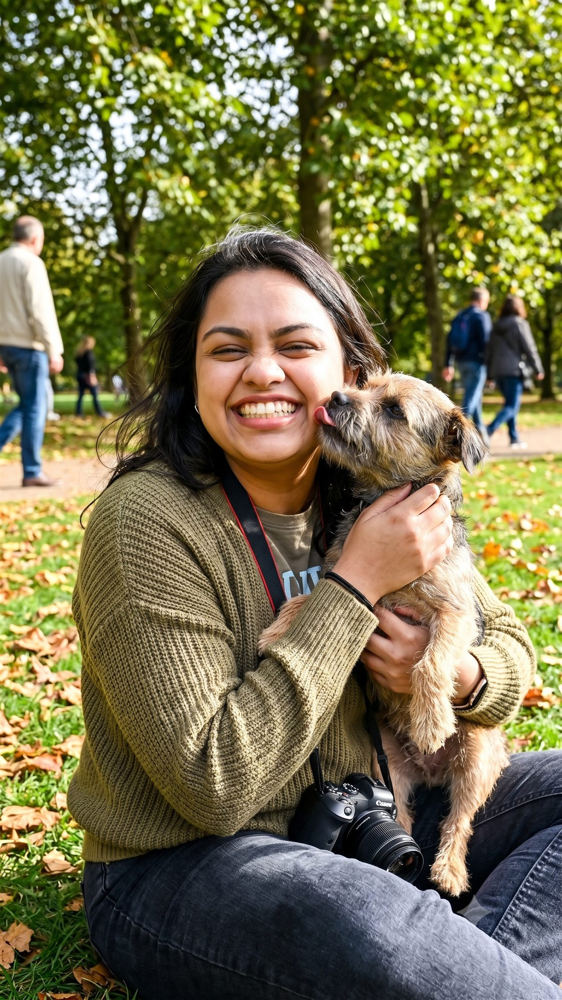
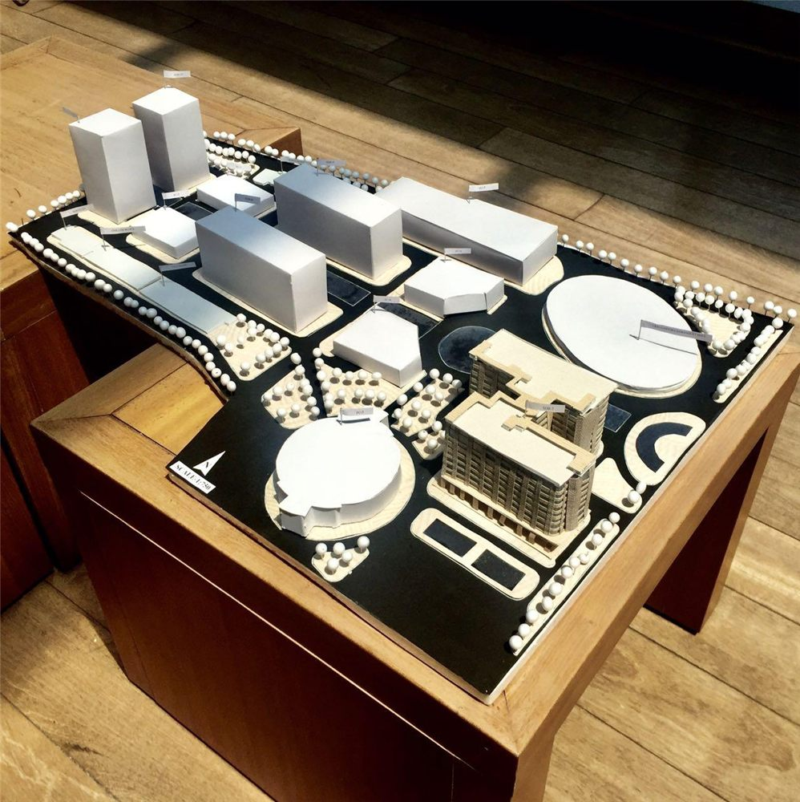
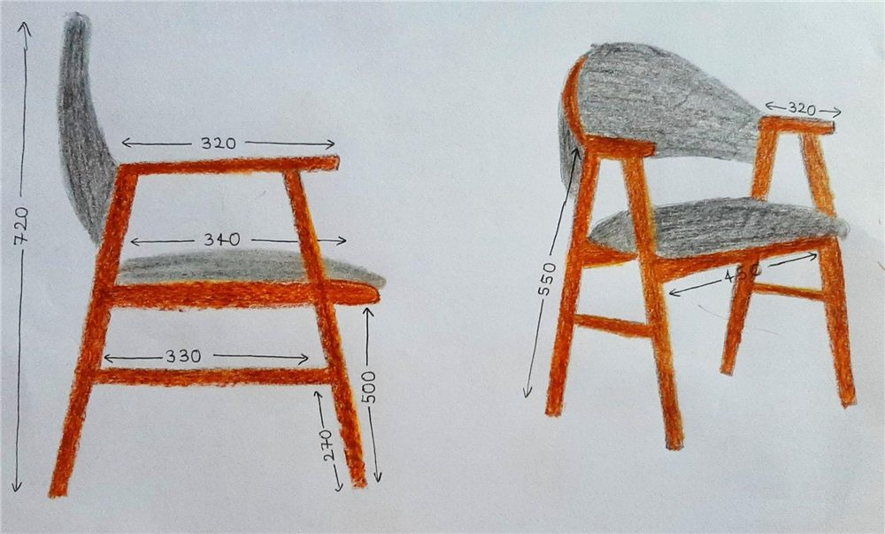

I never really switched careers. I just changed what I was designing.
Product design, mostly for complex B2B workflows — the kind where the hard part isn't the screen, it's the decision underneath it.

How I got here
I started in architecture — not as a pivot story, just as where the questions started.
Before product design, I worked with space: floor plans, dimensions, circulation, the way a room tells you where to stand before anyone says a word. That work was never really about the drawing. It was about figuring out what a space needed to do, then making the constraints visible enough that a decision became obvious.
Product design turned out to ask the same question in a different material. Instead of walls and circulation, it's flows and permissions. Instead of a floor plan, it's a screen. The medium changed. The way I approach a problem didn't. I still start by figuring out what's actually being asked before I decide what to build.
The shift, made visible
Same thinking, a different material.
Scroll isn't needed here — this plays on its own. A step button jumps straight to a stage.
My design process
I usually start with a question.
For me, design isn't a linear process. It's a cycle of asking, exploring, reframing and making — until the complex feels obvious.
-
01
Ask the question
What are we actually solving?
-
02
Explore the mess
Talk to people, look at workflows, collect the real context.
-
03
Find the real problem
The problem is usually hiding behind the problem.
-
04
Make the system visible
Map the people, rules, decisions and edge cases.
-
05
Make something to challenge
Create flows, wireframes and prototypes we can iterate on.
-
06
Try to break it
What happens when things don't go as planned?
-
07
Make it obvious
Turn the complexity into a simple, clear experience.
↺ And then we ask the next question.
What I'm curious about now
Where AI tools stop assisting and start deciding — and what that means for how interfaces should work.
Most of what I've designed lives in that gap: workflows where a person is still accountable for a decision, even as more of the groundwork gets automated. I don't think that gap closes cleanly, and I'm more interested in designing for it honestly than pretending it isn't there.
Outside the screen

